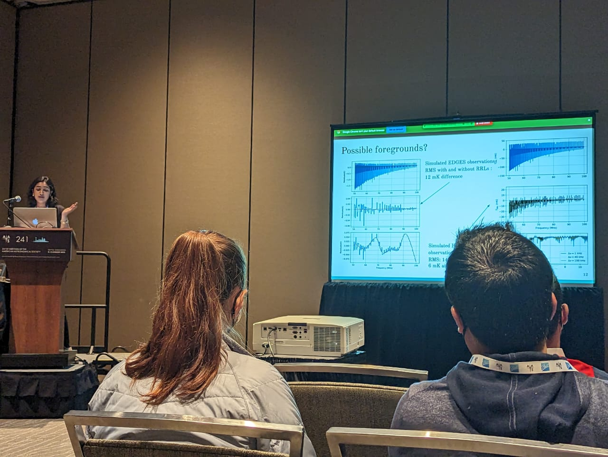

Meetings

Log of meetings, workshops, conferences, and site visits.
32. LuSEE-Night Collaboration Meeting, Space Science Laboratory, Berkeley CA - Mar 26-27, 2026
31. Experimental Frontiers in Low-Frequency Radio Cosmology, Vassar College, Poughkeepsie NY - Feb 27, 2026
30. The Invisible Universe, Richmond Astronomy Club - Feb 10, 2026
29. MARLAM2025, George Washington University, Washington DC - Jan 28, 2026
28. First On-sky measurements of 310MHz receiver, Green Bank Observatory, WV - Jan 12-16, 2026
27. 247th AAS meeting, Phoenix AZ - Jan 4-8, 2026
26. RFI testing for 310MHz receiver, Green Bank Observatory, WV - Oct 28, 2025
25. University of Richmond Department of Physics Colloquium - Oct 22, 2025
24. 8th Global 21cm Workshop, Caltech, Pasadena - Sep 22-25, 2025
23. New Avenues in Particle Cosmology, Winchester UK (May 20, 2025)
22. 2025 National Radio Science Meeting, Boulder, CO - Jan 7-10, 2025
21. Radio Astronomy techniques to measure the Global 21cm signal from the early Universe Karnataka Physics Teachers Association (Nov 24, 2024)
20. San Jose Astronomy Association (SJAA) Oct 19, 2024
19. A Day in a life of a Radio Astronomer at RV College of Engineering (Oct 15, 2024)
18. Studying Cosmic Dawn using remote Radio telescopes at Gulbarga Science Center, India (Oct 8, 2024)
17. 7th Global 21cm Workshop, Raman Research Institute, Bengaluru - Sep 30-Oct 04, 2024
16. Caltech Lunch Seminar - July 9, 2024
15. Space Archaeology: Using 21cm signal to study the early Universe at Annular Solar Eclipse 2023 county science outreach, Kanab Utah (Oct 14, 2023)
14. 19th Synthesis Imaging Workshop - Jun 12-22, 2023 - NRAO Charlottesville, VA
13. LWA Users Meeting 2023 Jun 2-3, 2023 - University of New Mexico, Albuquerque NM
12. VLA 4-band beam measurement campaign (using holography) - May 29-Jun 1, 2023 - NRAO Array Operations Center, Socorro NM
11. LWA single dipole beam measurement campaign with Drones (part of ECHO/External Calibrator for Hydrogen Observatories) - May 22-27, 2023 - Owens Valley Radio Observatory CA
10. 38th Annual New Mexico Symposium - Feb 17, 2023 - NRAO Array Operations Center, Socorro NM
9. Beam workshop for the Long Wavelength Array (part of Beam Dream Team series of meetings) - Jan 18-22, 2023 - Owens Valley Radio Observatory CA
8. 241st AAS Winter Meeting - Jan 8-12, 2023 - Seattle WA
7. 5th Global 21cm Workshop - Oct 17-20 - UC Berkeley CA
6. Studying Early Universe as an Engineer turned Radio Astronomer at the Cosmic Chronicles talk series, RV College of Engineering, India (Sep 6, 2022)
5. Intelligent Space Research-1 (Space Science and Applications) Colloquium - Jul 19, 2022 - Los Alamos NM
4. Studying Early Universe using Low Frequency Radio Telescopes at Grad-to-Grad Colloquium, Dept. of Physics, ASU (Apr 29, 2022)
3. Front-end electronics upgrades for LWA - Nov 2021 - Owens Valley Radio Observatory CA
2. SESE Annual Symposium - Aug 18, 2021, SESE ASU - Tempe, AZ
1. Los Alamos National Lab Summer Symposium - Aug 3-4, 2021, Los Alamos, NM